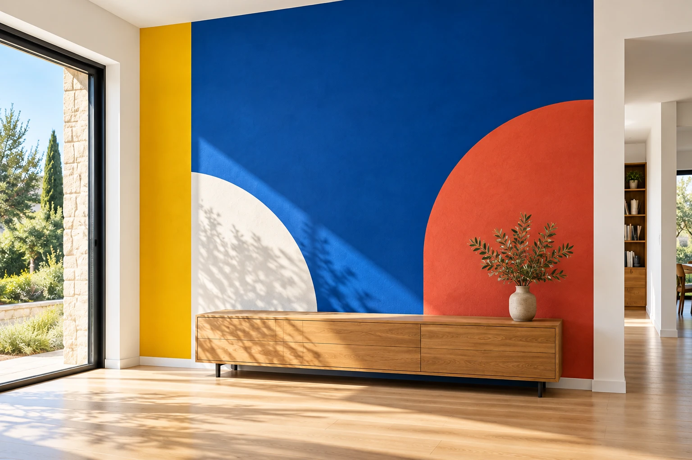
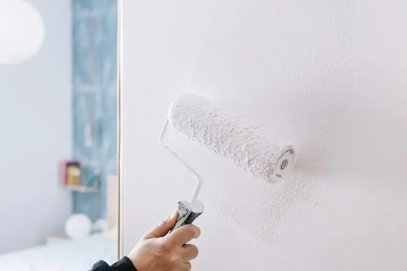
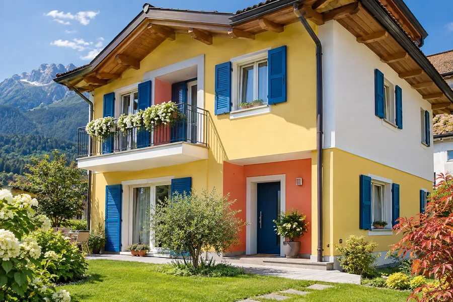
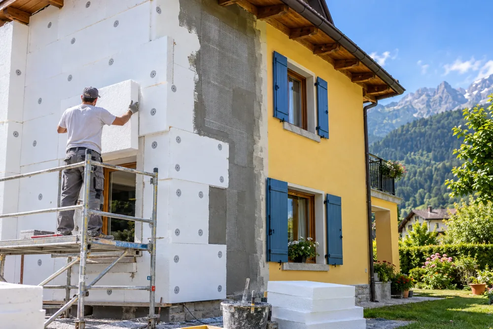
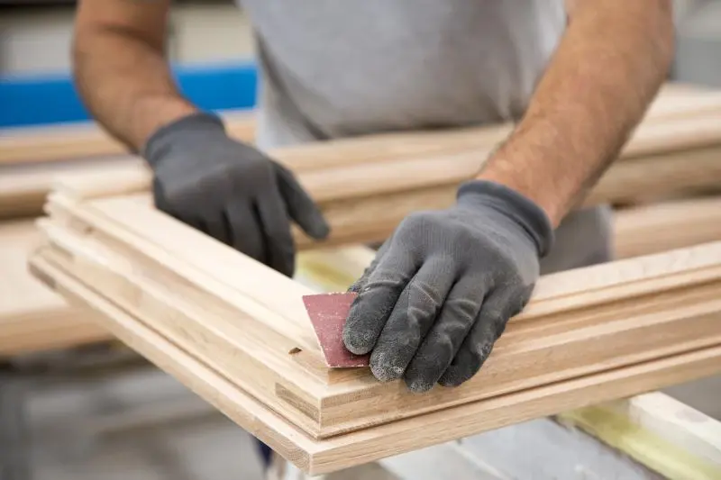
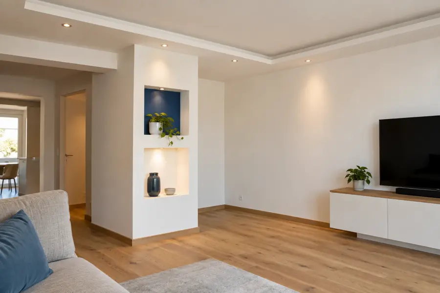
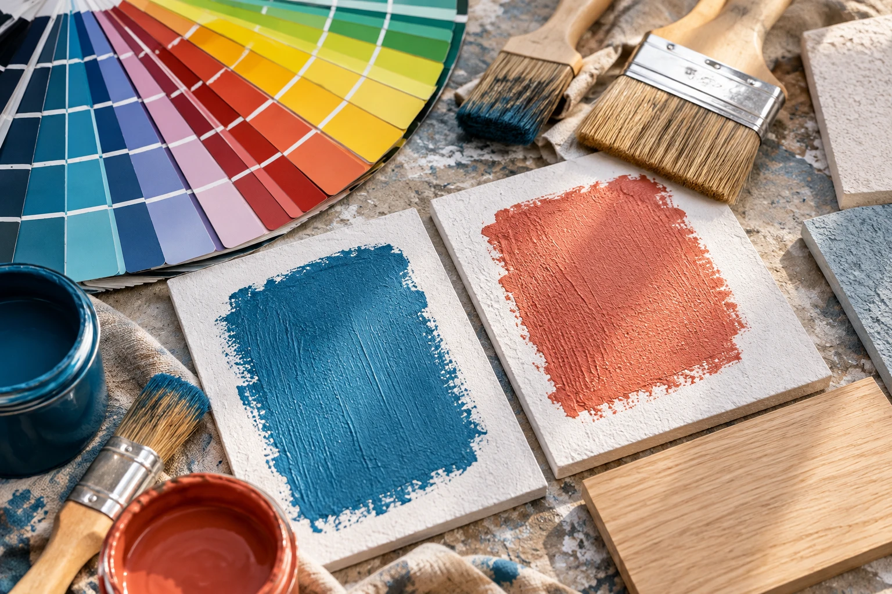

Preparazioni
1 / 3
DIMARO FOLGARIDA · VAL DI SOLE
Interni, esterni e lavori edili.
La cura artigiana, da una generazione all’altra.

CURA, FINO ALL’ULTIMA MANO.COSA FACCIAMO

01 — Tinteggiature internePareti e soffitti, colori e finiture per rinnovare gli ambienti di casa e di lavoro.
Tinteggiature e finiture per le superfici esterne, con attenzione ai materiali e alla durata nel tempo.

Isolamento termico a cappotto per migliorare il comfort degli edifici, in estate e in inverno.

Preparazione, levigatura e verniciatura per proteggere e rinnovare le superfici in legno.

Pareti e controsoffitti per dare forma agli spazi e adattarli alle tue esigenze.

CHI SIAMO

Siamo Cavallar Gino SNC.
Artigiani a Monclassico, in Val di Sole.
La nostra storia comincia con Gino Cavallar, con la sua esperienza e la sua passione per il mestiere. Dal 2000 l’attività prosegue con il figlio Mirco Cristian e la moglie Nicoletta, conservando il nome di Gino in suo ricordo.
Una conduzione familiare e un team specializzato: il rapporto con chi ci affida un lavoro è sempre diretto. Alla manualità artigiana affianchiamo materiali, strumenti e tecniche aggiornati.
COME LAVORIAMO
COMINCIAMO
CHIAMACI
333 773 0483SCRIVICI
cavallarginosnc@gmail.comDOVE SIAMO
Via Ravelli 1, frazione Monclassico